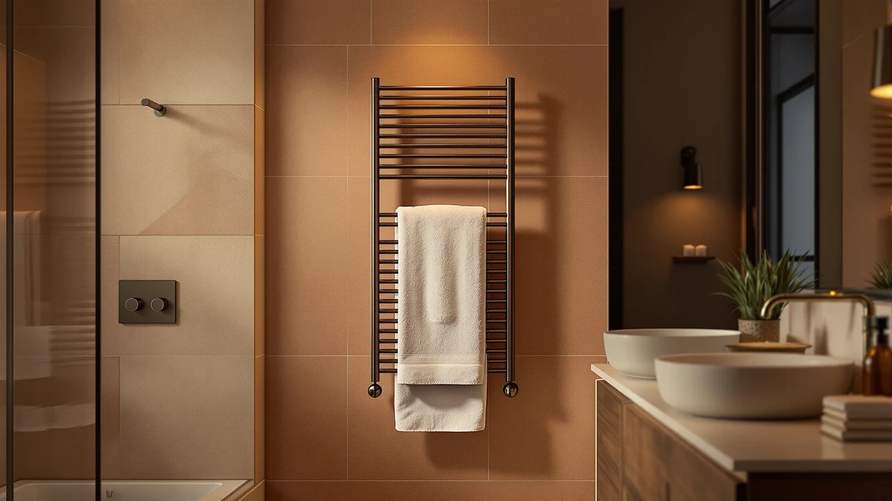

Best Towel Warmer With Child Lock of 2026: 7 Top Picks
Prices and picks verified as of August 2026. Independent, reader-supported reviews.


Quick Answer
The Keenray Towel Warmer for Bathroom is the best towel warmer with child lock for most families. Its 18L stainless steel bucket warms a full bath towel while the locked control panel keeps small hands from changing settings, all for $69.99.
Our pick: Keenray Towel Warmer for Bathroom, $69.99 Check Price on Amazon
Bottom line: our top pick is the Keenray Towel Warmer for Bathroom at $69.99. The best budget option is the WEILAlANTIAN Towel Warmer at $39.99.
Things to Know Before You Buy
- A child lock protects settings, not surfaces. The lock stops kids from starting the unit or cranking the heat, but the outside of a running warmer still gets warm, so placement matters as much as the lock.
- Bucket-style warmers heat from all sides. A towel warmer with a child lock in bucket form wraps a folded towel in heat, warms it faster than a draped rack, and sits on a counter you can keep above toddler height.
- Capacity is listed in liters when brands bother to list it. The 18L Keenray handles a full bath towel and the 20L VEVOR fits two; several cheaper picks skip the spec, so assume less room.
- Price buys space and polish, not more safety. The $39.99 WEILAlANTIAN and the $109.99 Paruu both lock their controls; the extra money goes to capacity and finish, while the $40.10 ZAFRO sneaks in a 24-hour schedule at a budget price.
- Pair the lock with an auto shut-off. A warmer that powers down on its own covers the days you rush out the door with the towel still inside.
If your toddler treats every glowing button as an invitation, the best towel warmer with child lock is the Keenray Towel Warmer for Bathroom. Its 18L stainless steel bucket holds a full-size bath towel, its control lock keeps curious fingers from changing anything, and at $69.99 it costs less than most of the warmers we compared. We lined up seven lockable models for this guide, and the Keenray beat the rest on the balance of capacity, safety, and price.
Warm towels stop feeling like a luxury the first week you have one of these buckets on the counter. The catch for parents is that a countertop appliance full of heat sits within reach of small children, which is why we limited this roundup to warmers with lockable controls or child-resistant designs. All seven picks use stainless steel construction, and prices run from $39.99 for the WEILAlANTIAN to $109.99 for the Paruu.
The Keenray suits most bathrooms, but it is not the answer for everyone. The Paruu earns the runner-up spot with a more polished build for $109.99, the VEVOR offers the biggest listed capacity at 20L, and the WEILAlANTIAN covers tight budgets at $39.99. Read the pick that matches your situation, then check the comparison table before you buy.
Why You Should Trust Us
I'm Ilane Tall, and I research bathroom appliances for Best Towel Warmers, including our guides to towel warmers with auto shut-off and heated racks. For this roundup on the best towel warmer with child lock, I read the product listings and spec sheets for each model, compared them line by line, and dug through owner reviews for the complaints brands leave out of their marketing. We recommend nothing we would not put on our own counter, and the affiliate links here have no influence on which product wins.
How We Picked
We started with the towel warmers sold on Amazon that advertise a child lock or lockable control panel, then cut anything without a stainless steel body, since plastic shells age badly in humid bathrooms. From there we scored each candidate on price, listed capacity, and control features. A towel warmer with a child lock earns its spot here by making the lock convenient enough that you leave it on, because a safety feature you disable out of annoyance protects nobody.
How We Compared
We ran the seven finalists through the same checklist. First came the lock itself: how you engage it, whether it covers the power button as well as the temperature controls, and what owners report about kids defeating it. Then we compared capacity against price, from the Keenray's 18L bucket at $69.99 to the VEVOR's 20L at $88.90, to find where your money buys the most usable space. A towel warmer with a child lock also has to work for the adults, so we weighed the extras, such as the 24-hour scheduling on the ZAFRO, against each model's asking price.
Our Picks

Keenray Towel Warmer for Bathroom
What we like
- 18L bucket fits a full bath towel
- Control lock blocks accidental starts
- Stainless steel body wipes clean and resists rust
- $69.99 undercuts the other large buckets here
Flaws but not dealbreakers
- Takes up more counter space than the compact picks
- Costs $30 more than the WEILAlANTIAN if you only warm hand towels
| Material | Stainless steel |
| Size | 18L |
The Keenray wins this roundup because it gets the fundamentals right without a premium price. The 18L stainless steel bucket swallows a folded full-size bath towel, which is the capacity most families need for the after-shower routine. Engage the lock and the controls ignore prodding from small hands, so the warmer can live on a low counter without becoming a hazard or a toy. At $69.99 it sits in the middle of this group on price while giving up nothing important on space.
The flaws stay minor. An 18L bucket needs a permanent patch of counter or floor, so measure before you order, and owners of cramped bathrooms may prefer the smaller Sweetcrispy. You also pay $30 over the WEILAlANTIAN for capacity you might not use if warm hand towels are all you want. For a household that runs a towel warmer with a child lock every day, though, the Keenray gives you the room and the lock without the premium markup, and nothing else we compared manages that.

Paruu Towel Warmer for Bathroom
What we like
- Most refined build of the seven we compared
- Lockable controls keep settings fixed once you dial them in
- Stainless steel construction suits a finished bathroom
Flaws but not dealbreakers
- $109.99 makes it the most expensive pick here
- The listing publishes no capacity figure, so compare dimensions before buying
| Material | Stainless steel |
| Size | — |
The Paruu is the runner-up because of its build. It shares the stainless steel construction of the other picks in this guide but presents it with more polish, and its lockable controls handle the child-safety job as well as the Keenray's. If you think of a towel warmer with a child lock as a permanent bathroom fixture rather than an experiment, this is the model that looks and feels the part.
Price is the reason it sits second. At $109.99 the Paruu costs $40 more than the Keenray without publishing a capacity figure to justify the gap, so you are paying for refinement rather than measurable extra room. Choose it when the bathroom is finished to a standard the budget buckets would undercut, and skip it when the money matters more than the look.

VEVOR Towel Warmers for Bathroom
What we like
- 20L capacity is the largest listed in this guide
- Lockable controls suit homes with young children
- Stainless steel bucket handles daily family use
Flaws but not dealbreakers
- $88.90 puts it closer to the premium Paruu than the budget picks
- The bigger bucket demands more storage or counter space
| Material | Stainless steel |
| Size | 20L |
The VEVOR answers a specific question: what do you buy when you need to warm two towels at once? Its 20L bucket, the largest listed capacity of the seven, gives you room to warm towels for two people in a single cycle instead of running the machine back to back. The controls lock, the body is stainless steel, and the whole package targets busy family bathrooms where the warmer runs every morning.
You pay for that room twice, once in cash and once in space. At $88.90 the VEVOR costs $19 more than the Keenray, and the two extra liters only matter if you use them. For couples and families who warm multiple towels in one go, the math works. For a single daily towel, the Keenray does the same job for less and takes up less of the bathroom while doing it.

WEILAlANTIAN Towel Warmer Towel Warmers
What we like
- $39.99 is the lowest price in this roundup
- Same stainless steel construction as the pricier picks
- Small enough to live on a crowded counter
Flaws but not dealbreakers
- No published capacity, so plan on hand towels and smaller bath towels
- Fewer conveniences than the mid-range models
| Material | Stainless steel |
| Size | — |
The WEILAlANTIAN exists to answer the budget question. At $39.99 it costs less than half the Paruu while keeping the two things this guide filters for: a stainless steel body and controls a child cannot casually operate. If you are unsure whether a warm towel will become a daily habit or a forgotten gadget, this is the cheapest way to find out without giving up the safety features that define a towel warmer with a child lock.
The compromises match the price. The listing gives no capacity figure, and the compact body means you should plan on hand towels or a single smaller bath towel rather than a family rotation. There is no scheduling and nothing extra to configure. As a starter unit for a bathroom with kids, though, it covers the essentials for the cost of a nice bath sheet.

ZAFRO Luxury Towel Warmer Bucket
What we like
- 24-hour scheduling starts the warmer before you wake up
- $40.10 is within pennies of the cheapest pick
- Stainless steel bucket like the premium models
Flaws but not dealbreakers
- No listed capacity to compare against the 18L and 20L buckets
- Extra settings give a curious child more to poke at, so keep the lock on
| Material | Stainless steel |
| Size | 24H Schedule |
The ZAFRO brings one feature down from the premium tier: a 24-hour schedule. Set it once and the bucket heats your towel before your alarm goes off, which turns the warmer from a gadget you remember to press into part of the plumbing of your morning. At $40.10 it costs 11 cents more than the budget WEILAlANTIAN, so the schedule effectively comes free.
The tradeoffs mirror the budget pick. The listing skips a capacity figure, so buyers with oversized bath sheets should look at the 18L Keenray or 20L VEVOR instead. More settings also mean more for small fingers to explore, so the child lock matters even more on this model than on the simpler buckets. If your mornings run like clockwork, the ZAFRO is the best value of the seven.

Sweetcrispy Towel Warmer for Bathroom
What we like
- Small footprint fits tight counters
- $44.99 keeps it in budget territory
- Stainless steel body stands up to bathroom humidity
Flaws but not dealbreakers
- No capacity listed, so treat it as a one-towel machine
- The Keenray offers documented 18L room for $25 more
| Material | Stainless steel |
| Size | — |
The Sweetcrispy competes on placement. In a bathroom where every inch of counter earns its keep, a compact bucket you can tuck beside the sink beats a bigger one that ends up on the floor, and this is the pick we would slot into a small bathroom first. At $44.99 it lands $5 above the two cheapest models while staying comfortably under the mid-range picks, and the lockable controls keep it kid-safe on a low counter.
Size cuts both ways. Without a published capacity you should treat this as a one-towel machine, and households that warm towels for several people will outgrow it quickly. The value question comes down to the Keenray, which documents 18L of room for $25 more. Pick the Sweetcrispy when space is the constraint, and the Keenray when it is not.

COSTWAY Towel Warmer for Bathroom
What we like
- Published 13.5 by 18.5 inch dimensions take the guesswork out of placement
- Stainless steel build matches the rest of the field
- The only pick here that publishes its exact footprint
Flaws but not dealbreakers
- $80.39 costs more than the Keenray without a listed liter capacity
- Sits in a crowded middle of the price range
| Material | Stainless steel |
| Size | 13.5" x 18.5" |
The COSTWAY stands out for an unglamorous reason: it tells you exactly how big it is. The published 13.5 by 18.5 inch footprint lets you check it against your counter or floor plan before you order, which none of the other six picks allow with the same precision. The stainless steel build and lockable controls keep it in step with the rest of the towel warmers with child locks in this guide.
The price is the sticking point. At $80.39 it costs $10 more than the Keenray, and without a liter figure you cannot prove it holds more towel for the extra money. Buy it when the dimensions happen to fit a spot you have already measured, or when the Keenray and VEVOR are out of stock. Otherwise the top pick gives you a documented 18L for less.
Quick Comparison
| Product | Material | Price | Rating | Best for | Get it |
|---|---|---|---|---|---|
| Keenray Towel Warmer for Bathroom | Stainless steel | $69.99 | 4 | Most families needing child-lock safety and full-towel room | View on Amazon → |
| Paruu Towel Warmer for Bathroom | Stainless steel | $109.99 | 4 | Finished bathrooms where the build quality shows | View on Amazon → |
| VEVOR Towel Warmers for Bathroom | Stainless steel | $88.90 | 4 | Warming two towels per cycle | View on Amazon → |
| WEILAlANTIAN Towel Warmer Towel Warmers | Stainless steel | $39.99 | 4 | The lowest possible spend | View on Amazon → |
| ZAFRO Luxury Towel Warmer Bucket | Stainless steel | $40.10 | 4 | Scheduled warm towels every morning | View on Amazon → |
| Sweetcrispy Towel Warmer for Bathroom | Stainless steel | $44.99 | 4 | Tight counters and small bathrooms | View on Amazon → |
| COSTWAY Towel Warmer for Bathroom | Stainless steel | $80.39 | 4 | Buyers who measure before they buy | View on Amazon → |
Does the child lock on a towel warmer keep kids from turning it on?
The lock disables the control panel so a child pressing buttons cannot start the heater or change the temperature.
What size towel warmer with a child lock should I buy?
Match capacity to your routine.
The Competition
All seven models here made the final cut, so the competition is about which pick loses the head-to-head for your bathroom. The Paruu asks $109.99 without publishing a capacity number, which keeps it behind the Keenray for anyone comparing on value rather than finish. The COSTWAY has the same problem in miniature at $80.39: solid and well-documented, but outclassed on price by the top pick.
Among the cheaper buckets, the Sweetcrispy at $44.99 loses the value contest to the ZAFRO, which adds 24-hour scheduling for $4.89 less. The WEILAlANTIAN survives as the budget pick on its $39.99 price alone. The VEVOR is the one model that beats the Keenray on a spec, with 20L against 18L, and it earns its place for two-towel households willing to pay $88.90.
Weigh it all and the verdict holds: the best towel warmer with child lock for most people is the Keenray. It publishes its 18L capacity, locks its controls against small children, and at $69.99 undercuts the other full-size buckets in this guide.